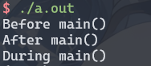

Lec4-Reverse¶
约 1281 个字 34 行代码 预计阅读时间 6 分钟
授课：马麟
程序？可执行文件¶
为什么计算机可以执行给定的程序呢
因为任何程序都将最终转化为「指令」的形式由计算机执行

前端与后端（Compile frontend & backend）¶

Compiled V.S. Interpreted¶
-
编译执行
上述通过编译器 (compiler) 将代码转化为机器指令格式的程序，进而执行
-
解释执行
通过解释器 (interpreter) 将代码转化为 VM 格式的程序（如字节码），进而在 VM 上执行


用户态可执行文件¶
- Windows：PE/PE32+（Port Executable）
- macOS：Mach-O（Mach Object）
- Linux：ELF（Executable and Linkable Format）
可通过命令行工具静态检视 ELF 文件
ELF (Executable and Linkable Format) is a common standard file format for "executables" in Linux (or Unix-like) systems
file：查看文件类型readelf：查看 ELF 文件的结构objdump：反汇编
ELF 的编译、链接¶
- 编译（汇编）：从源代码到目标文件
- 链接：从目标文件到可执行文件
ELF的编译、链接¶
以简单的hello.c为例
ELF的编译 (预处理)¶
- 头文件包含
- 宏展开与替换
ELF的编译 (编译)¶
- -S: Compile only; do not assemble or link
- -Ox: 优化等级
- -g: 启用调试
- ......
ELF的编译 (编译前端)¶
- 生成 clang AST
- 生成 LLVM IR
- 生成 gcc IR（以及其他细节）
ELF的编译 (编译后端)¶
- 从 LLVM IR 到汇编代码
- 从汇编代码到目标文件 (object file)
- 一步到位
- 从汇编代码到目标文件 (object file) GCC 版本

ELF的链接¶
- 目标文件
hello.o中有多个段 - 目标文件
hello.o还不足以包含程序运行的信息，需要进行链接 - 符号解析与重定位
- "essentially merging"

静态链接与动态链接¶

-
静态链接
将所有的目标文件都链接到一个可执行（ELF）文件中
- 优点：可执行文件独立，不依赖于其他文件，在各种环境中都可执行
- 缺点：通常会使可执行文件大小增加
-
动态链接
所有的目标文件都链接到一个储存在系统中的动态链接库（Dylib/So）中，无需单独储存
- 优点：节省磁盘空间，减少内存占用
-
缺点：依赖于系统中的动态链接库，动态链接库的版本等不同可能会导致兼容性问题；
动态链接的过程中会有额外开销，可能会影响程序的性能，但有一些优化策略
动态链接的PLT与GOT¶
-
PLT: Procedure Linkage Table
动态链接的“跳板”
-
GOT: Global Offset Table
- lazy binding optimization（延迟绑定优化）以及 full-relro 保护
ELF 程序的装载和运行¶
程序到进程¶
- 可执行程序 (Program) 是静态，文件的概念
- 进程 (Process) 是动态、系统运行时的概念
- 进程和线程 (Thread)
ELF程序的生命周期¶
- C/C++程序对应进程的起点并不是main
- 同样地，C/C++程序对应进程的终点也不是main
Example
#include <stdio.h>
#include <stdlib.h>
__attribute__((constructor)) void before_main()
{
printf("Before main\n");
}
__attribute__((destructor)) void after_main()
{
printf("After main\n");
}
int main()
{
printf("During main\n");
}
运行结果如下： 
-
静态链接程序：
内核以可执行文件 e_entry 位置 (即_start) 作为起点
-
动态链接程序：
内核以 interpreter 文件的 e_entry 位置作为起点
-
等了解交互/调试之后进行 revisit
_start¶
- glibc 代码 (汇编构筑)
- 携带
main符号跳转__libc_start_main函数
__libc_start_main¶
- 完成各类和目标 ELF 有关的初始化
- 内联
__libc_start_call_main - 最终跳往
main符号 main结束后调用exit
基地址与 ASLR¶
- PIE 动态链接可执行程序基地址随机保护
- 无论静态/动态 (是否 PIE)，栈地址随即化保护
- 通过 /proc/sys/kernel/randomize_va_space 控制随机化
ELF 程序的交互、调试¶
通过命令行人工与程序交互¶
- 绝对路径 / 相对路径
- -h / --help
- manual
- PATH 路径
- 通过虚拟机或者沙箱进行交互
通过编程与程序交互¶
- 重定向构建特殊字符作为输入
- C 管道编程
- python subprocess 库
- python pwntools 库
GDB: GNU DeBugger¶
- 调试模式
- 调试器执行模式
- attach 模式
- remote 模式
- 常用调试功能
- 执行断点
- 硬件断点
- 查看寄存器 / 内存
- set 修改寄存器 / 内存
- gdb 插件
ELF程序的逆向¶

ELF的静态逆向¶
- 反汇编：机器指令 \(\rightarrow\) 汇编指令（查表、准确）
- objdump
- 反编译：汇编指令 => 编程语言（分析/特征匹配/启发式 … 、往往不准确）
- IDA Pro (https://hex-rays.com/ida-pro/)
- Binary Ninja (https://binary.ninja)
- with free version
- Ghidra (https://github.com/NationalSecurityAgency/ghidra)
- Cutter / radare (https://github.com/rizinorg/cutter )
- 大语言模型 ;D (https://mlm.lingyiwanwu.com/)
静态逆向技巧¶
对于静态链接目标
- 特征 + 猜测尽可能恢复库函数符号
对于符号恢复的静态 or 动态链接目标
- 关注特定常量和字符串
- 关注输入和输出函数
- 关注分支、比较指令
- 关注可能涉及加密解密的特殊运算（位运算、异或、取余）
ELF的动态逆向¶
「可运行」和「可调试」是高效解决逆向问题的必备
- 许多逆向赛题都需要「纯静态」的方式解决，程序可能依赖特定的架构/设备
- “if it can run, it can be cracked”
- 通过运行时的结果解决静态逆向时的疑惑